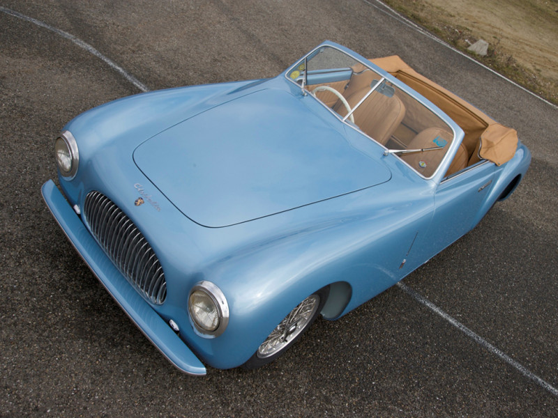
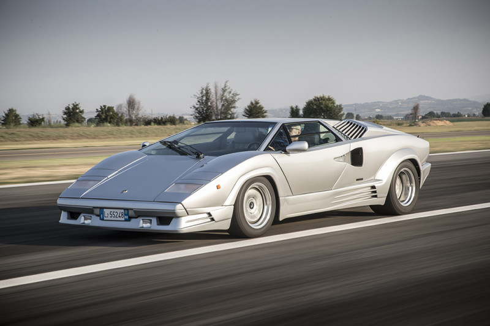
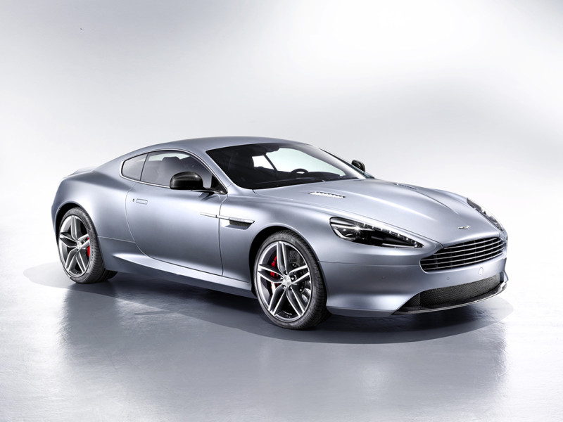

ВСЕ НОВОЕ - ЭТО ХОРОШО ЗАБЫТОЕ СТАРОЕ
МАШИНЫ В РАЗНЫЕ ЭПОХИ
ВСЕ НОВОЕ - ЭТО ХОРОШО ЗАБЫТОЕ СТАРОЕ
МАШИНЫ В РАЗНЫЕ ЭПОХИ
Вторая мировая война привела к важной инновации в дизайне автомобилей: стилю Ponton. Это была кульминация десятилетней тенденции к объединению передних и задних крыльев в единую непрерывную линию. Первой машиной в стиле «понтон» на массовом рынке в 1946 году стала советская «Победа-20». «Понтон» на ближайшие 20 лет определил образ автомобиля. Образцами стиля того времени эксперты Auto Bild назвали, например, Porsche 356 и Cisitalia 202.
Автомобильный дизайн развивается не в вакууме, поэтому нефтяной кризис 1970-х годов отразился и на облике автомобилей. Прощальным приветом ушедшей эпохи стал Pontiac Firebird, после чего в США также перешли к разработке компактных машин, чтобы конкурировать с европейцами. Жесткие линии и острые края стали стилистической нормой дизайна. Эталоны красоты 1970-х годов — швейцарская марка Monte Verdi, De Tomaso Mangusta или Lancia Stratos HF.
1980-е годы стали эпохой универсального, «коробочного» дизайна. На первый план вышли проблемы безопасности и экономии топлива. Это десятилетие можно назвать периодом, когда цвет умер: на смену ярким краскам пришли металлические оттенки. Радуют глаз в эти годы Fiat Panda, Ferrari Testarossa и Lamborghini Countach.
Еще десять лет спустя плавные изгибы и очертания переживают эпоху ренессанса. Особенно это заметно у дорогих спортивных автомобилей, как, например, Porsche 911 или более скромная Mazda Miata. Автомобильная мода оказывается столь же цикличной, как и мода на одежду: элегантные линии 1930-х и 1960-х годов снова становятся востребованными. Возврат к аэродинамическим формам был вызван поиском способов сделать автомобили более экономичными. Поиск гладких, обтекаемых форм останется актуальным и в ближайшем будущем. Среди классических автомобилей 90-х годов — Audi TT, Aston Martin DB7 и BMW 8-й серии, одна из моделей которой, Z8, также вошла в рейтинг Auto Bild.
2000-е ознаменовались взрывом автомобильного дизайна во всех формах и стилях. С одной стороны, в эти годы популярен обтекаемый, каплевидный Lexus RX, в облике которого прослеживаются стилистические черты 1930-х годов. С другой — спросом пользуется наследник жестких и четких линий 1970–1980-х годов Range Rover. Разнообразие форм тем не менее не повлекло разнообразия оттенков. Самыми популярными цветами стали белый, серебристый, черный и серый.
